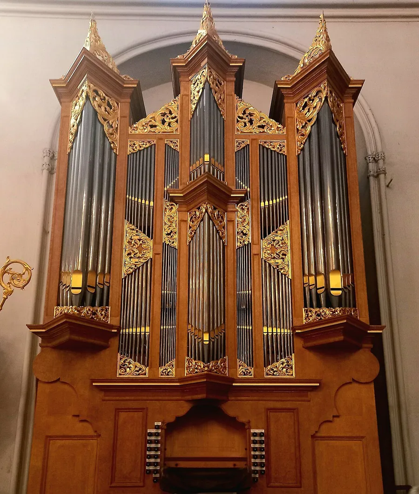

Church Music · Organs
The Reil Organ
The small organ of the Augustinian Church, the “Vienna Bach Organ”: built in 1985 following the organ building of Bach’s time.

- 1985Built by the Reil brothers, Heerde (Netherlands)
- 2Manuals
- 25Stops
- 300Years of Johann Sebastian Bach: the occasion for building it
The small organ was commissioned by the Vienna Festival for the anniversary year “300 years of Johann Sebastian Bach” and consecrated by Cardinal Franz König, then Archbishop of Vienna.
Its materials and construction follow the organ building of Bach’s time, hence its nickname “Vienna Bach Organ”. It was built in 1985 by the Reil brothers in Heerde (Netherlands), with two manuals and 25 stops, historically modelled on Gottfried Silbermann and Tobias Trost.
It has slider chests and mechanical key and stop action and is tuned in Werckmeister III temperament at 446 Hz. The instrument belongs to the Parish of St. Augustine and is played at services and in organ concerts.
Specification
I Hauptwerk (Great)
- Bordun 16′
- Principal 8′
- Gedackt 8′
- Octava 4′
- Spitzflöthe 4′
- Quinta 3′
- Octava 2′
- Mixtuur IV–VI
- Cornett V Diskant
- Trompete 8′ Bass/Diskant
II Oberwerk
- Gedackt 8′
- Quintadena 8′
- Principal 4′
- Rohr Flöthe 4′
- Nassat 3′
- Gemshorn 2′
- Octava 2′
- Sufflöthe 1′
- Sesquialtera II
Pedal
- Sub-Bass 16′
- Octava-Bass 8′
- Posaunen-Bass 16′
- Trompeten-Bass 8′
- Cornett 2′
The spelling of the stop names follows the historical model. The trumpet in the Hauptwerk is divided into bass and treble.